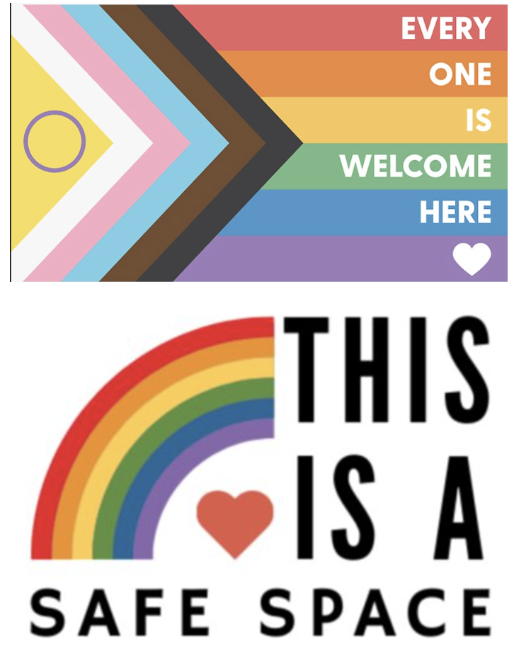

CFAN 3091V: From Ideas to Strategic Plans
Fall 2026 | 3 credits | A-F
Welcome
You have a research idea. How do you turn it into a proposal your advisor and committee can evaluate?
It has been said, paraphrasing Edison, that innovation is one percent inspiration and 99 percent perspiration. We start with the inspiring idea and sweat our way to a research proposal: choosing and defining the idea, reviewing the literature, designing the research, and building a hypothesis, aims, objectives, and a strategy.
This is a writing-intensive, workshop-style course, and you will write every week. Your writing improves through practice, feedback, and revision, not through one high-stakes assignment at the end.
At a Glance
| Meets | Monday and Wednesday, 10:15-11:30 a.m. |
| Where | Borlaug Hall 213, in person |
| Term | September 8 through December 16, 2026 |
| Credits | 3, graded A-F on a specifications basis |
| Workload | About 9 hours per week, 2.5 of them in class |
| Format | Board and paper. No slides. Individual meetings in Weeks 3, 7, and 13. |
| Final exam | None. The final deliverable is a proposal or thesis draft, according to course track. |
What You Will Build
Most students finish a complete thesis proposal. Students graduating in Fall 2026 follow an accelerated track and finish a complete thesis draft. By the end of the term you will also have:
- a process portfolio documenting your growth as a researcher and writer;
- the ability to discuss your proposal or thesis and respond to critique professionally; and
- a documented professional-review cycle with the Primary Advisor and/or Proposal Committee.
Course Structure
| Phase | Weeks | Focus |
|---|---|---|
| Foundations | 1-4 | Research domains, mentorship, technical writing, thesis requirements, and literature search |
| Evidence and Methods | 5-8 | Research design, statistical discernment, source evaluation, and synthesis |
| Proposal or Thesis Development | 9-12 | Document structure, two student peer reviews, sustained drafting, results, figures, and abstracts |
| Professional Review and Completion | 13-15 | Individual conversations, Primary Advisor and/or Proposal Committee review, revision, and finalization |
Your Instructor

Dr. Samantha Wells (she/her/hers) is an Associate Professor in Applied Plant Science at the University of Minnesota. A proud member of the LGBTQIA2S+ community, she is dedicated to creating an inclusive and affirming learning environment where all students feel safe, seen, and valued, whether in the classroom, in her office, or within her research lab.
Her research focuses on the sustainable intensification of agriculture, including nitrogen management, soil fertility, and cover cropping systems. Her teaching philosophy centers on compassion, rigor, and relevance. She encourages curiosity, authenticity, and growth through failure.
- Email: sswells@umn.edu, with a response within 48 hours on weekdays
- Office: 209 Hayes Hall
- More: Wells ELAI | Wells Lab
Full biography, office hours, and how to reach her are in the syllabus.
Where to Go Next
- Syllabus. The detailed course document: policies, grading, workload, honors thesis requirements, and University policies.
- Schedule. Week-by-week topics, due dates, and semester closures.
- Add the course to your calendar. All 28 meetings as an importable calendar file. Oct 28 is independent work with no class meeting.
- Assignments. What you will submit and what each piece is for.
- Advisor FAQ. Share this early with the Primary Advisor and/or Proposal Committee.
- Honors Requirements (PDF). The University Honors Program’s requirements for the thesis, committee, and filing deadlines.
This publication or material is available in alternative formats upon request. Please contact Dr. Samantha Wells, Applied Plant Science, 209 Hayes Hall, University of Minnesota, St. Paul, MN 55108, sswells@umn.edu.